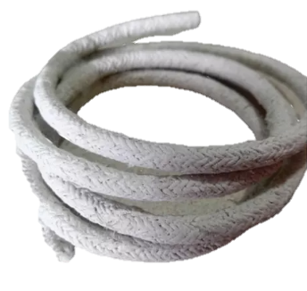
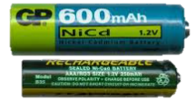
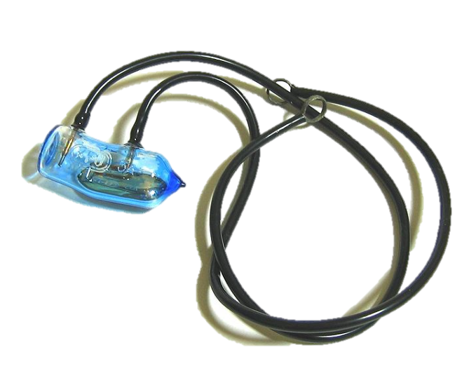
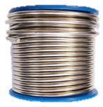
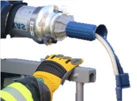
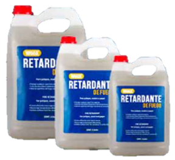

私たちが呼吸する空気の質が健康と地球の持続可能性に直接影響を与える世界において、大気汚染物質に関する研究はかつてないほど重要です。浮遊粒子、窒素酸化物、二酸化硫黄、一酸化炭素、揮発性有機化合物、温室効果ガスなどの物質は、環境と生物に大きな影響を与えています。これらの汚染物質は、気候変動やオゾン層の破壊などの地球規模の課題を悪化させるだけでなく、呼吸器疾患、心血管疾患、アレルギーを引き起こすなど、公衆衛生にも悪影響を与えています。 環境的には、汚染物質は生態系の活力を損ない、植生を損傷し、水域を汚染し、生物多様性を脅かします。この問題に対処するためには、その排出を減らすための効果的な戦略を促進し、よりクリーンでバランスの取れた未来に貢献する持続可能な実践を奨励することが重要です。これらの課題にどのように立ち向かい、誰もが健康な環境を築くために何ができるかを一緒に学びましょう。
Normal
デジタル時代において、オペレーティングシステムとネットワークは現代技術の機能に不可欠です。しかし、これらのコンポーネントの製造に使用される材料は、環境に重大な影響を与える可能性があります。これらの材料は、電子機器やネットワークコンポーネントの製造に歴史的に使用されてきましたが、適切に管理されない場合、環境や人間の健康に深刻な害を及ぼす可能性があります。
古い断熱材に含まれている可能性があります。熱と腐食に対する耐性のために広く使用されていました。アスベストへの長期間の曝露は、アスベスト症などの深刻な病気を引き起こす可能性があります。その使用は多くの国で禁止されていますが、古い建物には残っています。
充電式バッテリーや一部のコネクタで使用されます。また、特定のコンポーネントの腐食防止コーティングにも使用されます。これは重金属であり、人間の健康や環境に危険をもたらす可能性があります。現代技術は、より害の少ない代替品を模索しています。
一部の電子機器、例えばスイッチやリレーに含まれている可能性があります。また、蛍光灯や古い測定機器にも使用されていました。水銀は非常に有毒であり、適切に廃棄されない場合、環境リスクを引き起こす可能性があります。多くの国では、国際的な合意を通じてその使用が制限されています。
ハンダやケーブルコネクタに含まれています。低い融点と優れた導電性のために使用されます。しかし、不適切に取り扱うと有毒である可能性があります。現在の規制は、電子製品におけるその使用を減らすことを目指しています。
絶縁体や一部のコンデンサに含まれています。これらの化合物は非常に有毒であり、環境に持続的に残ります。がんやホルモン異常などの健康問題と関連しており、多くの国ではその使用が禁止または厳しく規制されています。
プラスチックやケースの難燃剤として使用されます。これらは電子機器や繊維の火災の広がりを防ぐのに役立ちます。しかし、燃焼時に有毒な物質を放出する可能性があり、不適切に廃棄されると健康や環境にリスクをもたらす可能性があります。
